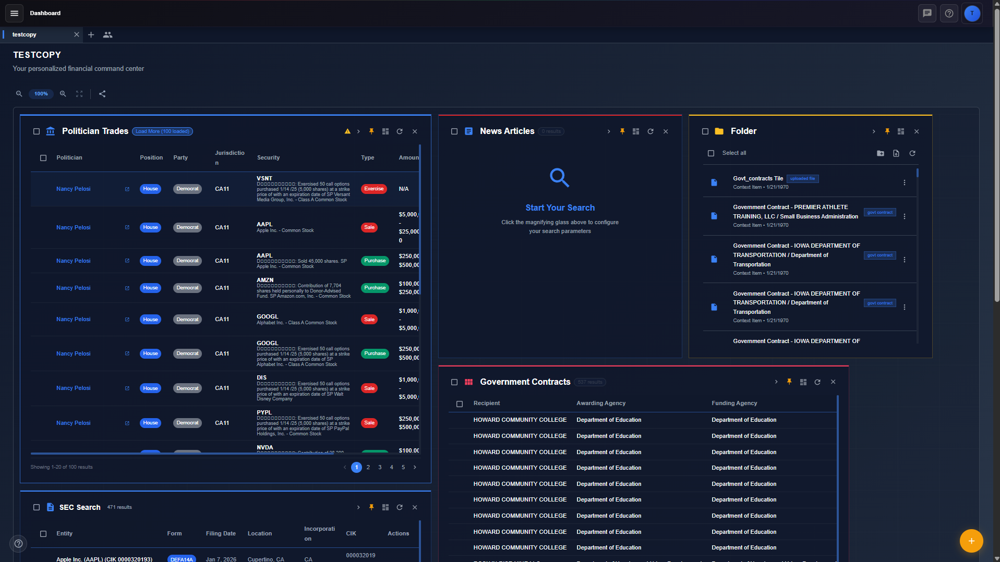
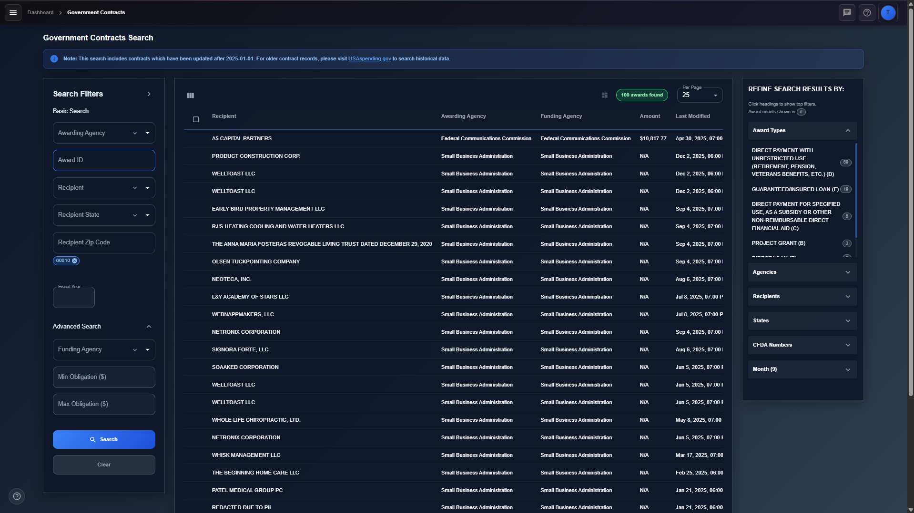
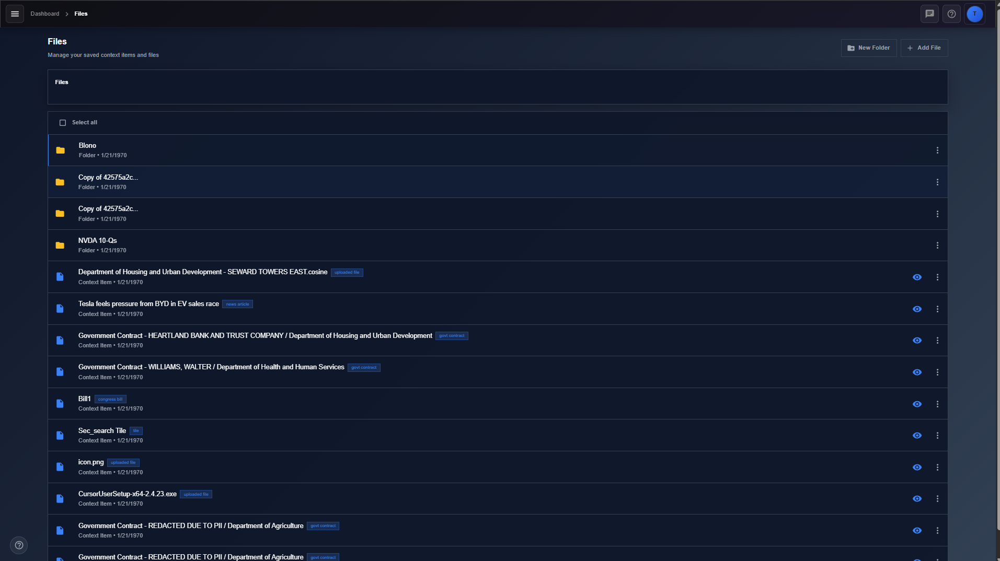
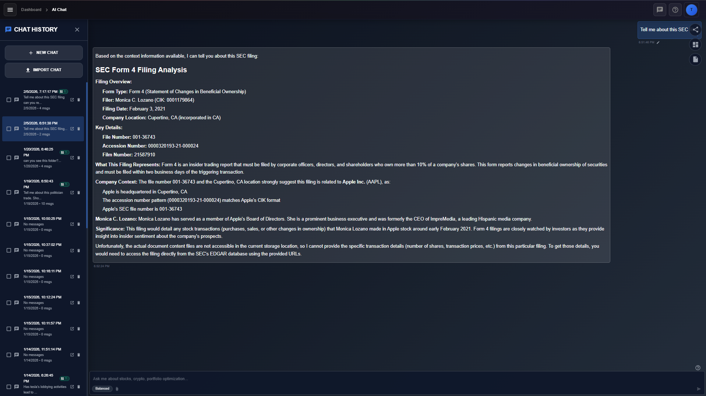

Solo capacity
- Progressive disclosure and Easy Mode
- Polling instead of WebSockets
Product design case study
Designing a research workspace for following the money.
Public product. Indexing and collection internals stay high level.
FinGov is a government and financial research platform I designed and built alone. It started as a tool for investors who wanted decisions grounded in SEC filings, news, and market data. Following capital from markets into government spending pulled the product toward transparency: contracts, congressional trading, lobbying, campaign contributions, and related disclosures. Still one workspace, with an AI assistant that only sees what the user attaches.
The design problem was not “add another search box.” It was how to make fragmented public data feel like one research practice — find, save, analyze — without drowning non-experts in filters or forcing power users into a toy UI.
Early users were people trying to make data-backed investment connections. Filings, news, and price trends were necessary and incomplete. The useful trail kept pointing at government: who got the contract, who traded the stock, who lobbied whom.
Before FinGov, each source lived on its own site, in its own vocabulary.
Users pasted fragments into notes or a generic chatbot that had no durable link to the filing, award, or bill. Context evaporated between sessions.
I knew the workflow because I was designing for the same job I was doing: following money until the trail crossed agency boundaries. Later demos with people in local politics confirmed a sharper version of the problem. Many were not already fluent in how tax dollars and influence actually move. Speed of lookup mattered. Legibility of the system mattered more.
| Constraint | How it shaped design |
|---|---|
| Solo ownership of frontend, backend, devops, AI, and security | Prefer patterns I could learn and operate. Reuse over one-off infrastructure. |
| AI-assisted development for speed | I still owned the vision and the reuse, including one DynamoDB Terraform module across tables. |
| Heterogeneous APIs | Search had to respect batch zip indexes, on-demand calls, and scraping. |
| Rate limits and formats | Coverage notes, progress states, and honest “what’s searchable” copy in the UI. |
| Latency on growing indexes | Targeted per-source search instead of an early open search across everything. |
The interesting work was not the final screens. It was the forks that did not ship, or shipped only partly.
I wanted everything reachable from a customizable dashboard with a Cursor-like chat on the side. That model is excellent for ambient research. It failed for heavy search: filters, facets, and result tables need width and height that tiles cannot give.
Cut. Tile-only deep search.
Shipped. Dashboard for composition and monitoring. Dedicated pages when the work gets serious.
The early flow was right-click, then add to context. Precise, but easy to miss and slow in a multi-object session.
Cut. Right-click as the primary path.
Shipped. Drag filings and research objects into chat, so context feels like moving evidence onto the desk.
A single open-text query across every index was attractive: “Apple” would return news, SEC filings, trades, and lobbying. I cut it in favor of per-source targeted search so response times stayed usable.
That tradeoff was right early. With many integrations live, nearest-match cross-source search is an intentional next step.
Politician trades, for example, required scraping where APIs were inadequate. Users feel that as uneven richness. The design had to absorb inconsistency instead of pretending every source is EDGAR-quality.
The dashboard pins and monitors search, and opens chat. Search saves an object into Files or drags it into chat. Files attaches a folder or file to chat. Chat can save the analysis back to Files.
Core loop: discover on the dashboard, deepen on a full search page, capture into Files, analyze in chat on attached context, and return to saved work later.
Live product: fingov.ai. These screenshots are also used on the marketing landing page.




I owned problem framing, information architecture, UI, onboarding, and engineering end to end. There was no design team.
Research partners were users. I took shareable builds to local political meetings for both parties, demoed, and implemented feedback. One concrete outcome, a campaign contributions surface, came from a request by a campaign manager for my district’s House representative. Their identity stays anonymized here.
The first meaningful launch signal was not a dashboard metric. It was a live demo on an older machine with unstable internet.
| Expectation | Observation | Design response |
|---|---|---|
| Search would feel slow off good hardware | Search stayed surprisingly fast | Confirmed targeted indexing and per-source search |
| The layout would transfer fine | Pages felt cramped. Too many indexes and fields were visible | Shipped Easy Mode: common fields only, less visual noise. Advanced remains for power users |
| Political audiences already know the money map | Many did not | The product job expanded from faster lookup to making money flows legible |
The same demo showed that baseline literacy of money flows was lower than I expected, so the product is positioned as transparency and understanding, not only faster lookup.
I am not citing vanity marketing numbers as evidence. The validated learning was qualitative: density hurt first, mental models were weaker than expected, and Easy Mode plus contribution-oriented requests followed from real sessions.
FinGov is a case study in designing under fragmentation: many public sources, one research practice, solo delivery. The shipped system keeps a Cursor-inspired dashboard and chat, adds full pages where tiles failed, treats context as drag-and-drop evidence, and uses Easy Mode so transparency tools do not only serve experts. The cuts, especially early broad search, were deliberate performance choices I would partially reverse with a clearer map of integrations next time.